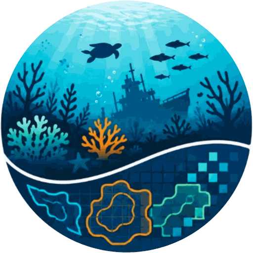

Evaluating Vision Foundation Models for Underwater Semantic Segmentation
Torben Globisch · Stefan Oehmcke University of Rostock, Germany
Underwater imagery breaks the assumptions that vision foundation models are pretrained under: light attenuation, scattering, and wavelength-dependent color distortion shift image statistics far from web-scale photo collections. How well modern VFMs actually transfer to this domain has been hard to answer, because every underwater dataset comes with its own preprocessing, splits, and evaluation protocol.
AQUABENCH harmonizes nine public underwater datasets into a single semantic segmentation interface — preserving each dataset's original class taxonomy — and evaluates frozen encoders under one consistent protocol. The result is a controlled, reproducible testbed for measuring representation transfer rather than tuning effort.
Instance masks converted to semantic labels, aspect-ratio normalization, patch-aligned resizing, and standardized splits, with quality control and documented licensing.
Five VFM families at two scales each, kept entirely frozen. Only a lightweight head is trained, so the score reflects the representation, not the adaptation budget.
Token-matched linear probing, a frozen-encoder UPerNet decoder, and a largest-variant track — scored by mIoU over foreground classes with rank-based aggregation.
Coral reefs, fish, seagrass, marine debris, ship-hull inspection, and general scene understanding — 34,097 training, 5,301 validation, and 8,063 test images in total. Each dataset keeps its own taxonomy and its own license.
Class counts include the background class. Preprocessing does not alter the licenses of the underlying datasets — each retains its original terms, and use of the full suite requires compliance with all of them.
Spanning self-distillation, multi-teacher distillation, latent predictive learning, and masked image modeling. Each family is evaluated at ViT-B and at its largest publicly released variant.
A fully fine-tuned ResNet-50 with a UPerNet decoder is included throughout as a supervised reference point.
A short summary — the full analysis, per-dataset tables, and critical difference diagrams are in the paper.
It achieves the strongest aggregate rank in all three evaluation tracks, and is the only family confined to the top-ranked group throughout.
Larger released encoders do not consistently improve transfer. A frozen DINOv3 ViT-B with UPerNet beats the frozen 7B encoder with a linear head on six of nine datasets.
Rankings shift with the adaptation protocol, so linear probing alone is an incomplete proxy for how a backbone will behave in a deployed segmentation system.
Even the best results reach only 0.28 mIoU on SeaClear and 0.32 on LIACI, and weak classes are not simply the rare ones — frequently seen classes fail too.
Everything below is prepared and will be released together.
Placeholder entry — the final reference will be updated on publication.
@inproceedings{globisch2026aquabench,
title = {AquaBench: Evaluating Vision Foundation Models for Underwater Segmentation},
author = {Globisch, Torben and Oehmcke, Stefan},
booktitle = {To appear},
year = {2026}
}